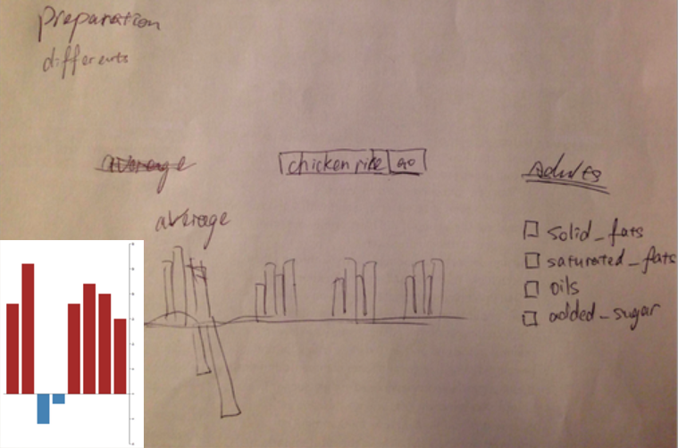
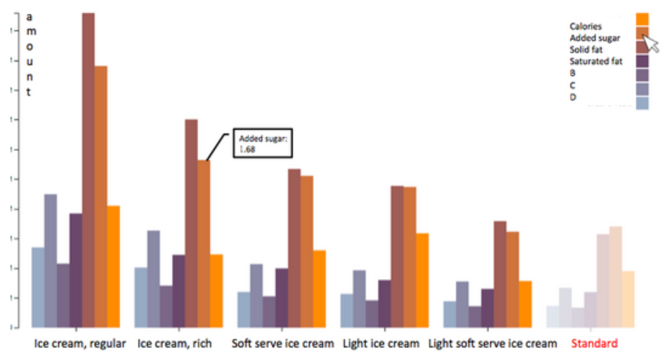
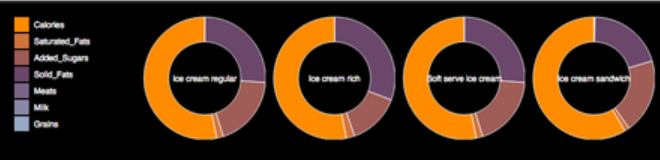

Portofolio of Yichi
Food Choice Tool

Summary
Skills: D3, Javascript, HTML, CSS
I propose visualization for someone in the role of a mom who cooks food for the whole family. She needs to take care about providing good food components and preventing bad food components for the family when choose different recipes.
This system allows her to search keyword of foods she is trying to prepare.
Then she can see the amount of different components like calories, solid fats, saturated fats vegetables, grains and so on. She can compare similar foods choices by sorting the component she cares most. Finally, she can decide what foods should be cooked for kids and what foods should be cooked for someone who is obese or on a diet.
Needs Assessment
* A way to find target foods quickly without scanning a list of thousands foods.
* A way to know amounts of components in each food based on a same weight standard.
* A way to know how many calories different people should take daily.
* A way to sort foods based on different components in order to focus and compare effectively.
* A way to judge different components among each food composition.
Implemented Solution
* The data i used is multidimensional, so I use small multiples to visualize it.
* I use group bar charts to indicate the results. X-axis indicates different foods, each as a group of bars. In each group, colorful bars indicate different components of the foods. So the different components can be compared by colors, which is effective because color is a very good representing way for nominal data. Y-axis indicates the amount of components based on one-cup standard weight of the food. So the height of each element is very obvious and can be compared easily. Since length is a very good representing way for quantitative data, comparison based on height of bar charts is effective.
* The foods can be sorted any one of the component. For example, when user checks added sugar button, then all the foods will be sorted by added sugar. Sortable function links small multiples, brings far things close and helps compare clearly among different components. By this interactive function, the visualization can be more expressive and effective.
* When compare calories, there will be a user input amount line. Users can compare their expectation to actual food calories. The difference can be surprised, which is good, cause in this way users can have expressive guidance on at least which food they should avoid if they are on a diet.
* When the user hovers the mouse to specific component in the charts, the food is highlighted with orange color and a detail of that food shows up in a open board. By highlighting, users can focus on one specific food and distractions can be removed.
Demo
* Compare different components by different color hues.
* Compare different foods by different groups.
* Compare amount of each component by different heights of bars.
* Compare foods overall based on evaluating their overall amounts of good components and bad component compared to other foods by seeing the all bars heights in each group.
* Compare the amount of calories by the bars heights and the line height.
* Compare the calorie necessity by the length of radius and degree of angle in the aster chart.


Archive of Experiments: One
Make the x-axis indicates the standard intaking amount for each component. The bar height indicates how many more or less amount for each component one dish can provide. Red here means overtaking bad components, which indicates unhealthy. I tossed it. Because there is no fixed standard for each component, which can be a zero line. The situation really depends on different people.

Archive of Experiments: Two
Tried to use a independent group of bars shows the standard intaking amount of components. I tossed this. Because I feel it's not effective for information comparison compared to a line across all group of bars.

Archive of Experiments: Three
Each donut indicates one food. Each color indicates one component. Length of segment shows the amount of that component. I tossed this. if the amount of one component is very small, then you can hardly see it from the donut chart at all. Also, it is hard to compare curve length among each donut effectively.